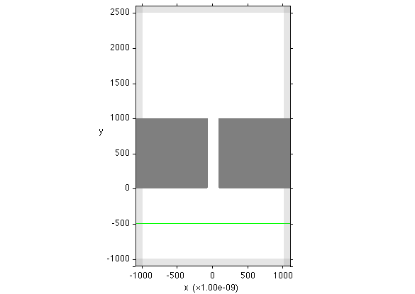

Intermediate Usage (for building complicated systems)
This document builds upon Basic Usage and explains how to describe the problem in a more flexible way.
Contents
Example Code
We examine a portion of the last code discussed in Basic Usage:
[E, H, obj_array, src_array] = maxwell_run(... 'OSC', 1e-9, 1550, ... 'DOM', {'vacuum', 'none', 1.0}, [-1100 1100; -1100 2600; 0 10], 10, BC.p, [100 100 0],... 'OBJ', {'CRC/Ag', 'k'}, ... Box([-1100 -80; 0 1000; 0 10]), ... Box([80 1100; 0 1000; 0 10]), ... 'SRCJ', PlaneSrc(Axis.y, -500, Axis.x), ... true);
Passing Variables as Arguments
You can store any arugments of maxwell_run in variables and pass the variables instead of the arguments to maxwell_run. This increases the readability of the code. For example, the meaning of the last logical argument true in the above code is hard to figure out from the code itself. We can define a variable inspect_only and modify the code as:
inspect_only = true; [E, H, obj_array, src_array] = maxwell_run(... {PARAMETER GROUPS}, ... inspect_only);
Now, it is more obvious that inspect_only = true makes maxwell_run inpect the problem without solving it.
Similarly, you can define a variable for the color code used for a material. Because the actual color of silver is closer to gray than black, let's define a RGB vector and substitute it for the color code 'k' used for the material 'CRC/Ag':
inspect_only = true; gray = [0.5 0.5 0.5]; % [r g b] [E, H, obj_array, src_array] = maxwell_run(... {OTHER PARAMETER GROUPS}, ... 'OBJ', {'CRC/Ag', gray}, ... Box([-1100 -80; 0 1000; 0 10]), ... Box([80 1100; 0 1000; 0 10]), ... inspect_only);
Upon execution, the above code generates the following figure describing the simulation domain:

Compare this with the last figure in Basic Usage and note that the two silver boxes are now drawn in gray.
Building Shapes Beforehand
You can build the shapes of objects outside maxwell_run, store them in variables, and pass the variables to maxwell_run:
inspect_only = true; shape1 = Box([-1100 -80; 0 1000; 0 10]); shape2 = Box([80 1100; 0 1000; 0 10]); gray = [0.5 0.5 0.5]; % [r g b] [E, H, obj_array, src_array] = maxwell_run(... {OTHER PARAMETER GROUPS}, ... 'OBJ', {'CRC/Ag', gray}, shape1, shape2, ... inspect_only);
Defining shape variables before maxwell_run this way could be useful when, for example, you want to calculate the size of the shapes using complicated equations.
You can even create an array of shapes and pass it as a single argument:
inspect_only = true; shape1 = Box([-1100 -80; 0 1000; 0 10]); shape2 = Box([80 1100; 0 1000; 0 10]); shape_array = [shape1, shape2]; gray = [0.5 0.5 0.5]; % [r g b] [E, H, obj_array, src_array] = maxwell_run(... {OTHER PARAMETER GROUPS}, ... 'OBJ', {'CRC/Ag', gray}, shape_array, ... inspect_only);
Passing an array of shapes as an argument can be useful when the number of shapes is not fixed.
Complete Code
As shown above, maxwell_run allows flexible ways to construct arguments. In fact, you can construct most arguments outside maxwell_run, store them in variables, and pass the variables to maxwell_run. Below is a complete example that does so.
inspect_only = true; % Geometric Parameters L0 = 1e-9; % length unit wvlen = 1550; % wavelength dL = 10; % grid size Lpml = 10*dL; % PML thickness xn = -1000-Lpml; xp = 1000+Lpml; % x boundaries yn = -1000-Lpml; yp = 2500+Lpml; % y boundaries zn = 0; zp = dL; % z boundaries w = 160; % slit width h = 1000; % metal thickness % Materials and Shapes vacuum = Material('vacuum', 'none', 1.0); shape1 = Box([xn -w/2; 0 h; zn zp]); shape2 = Box([w/2 xp; 0 h; zn zp]); shape_array = [shape1, shape2]; gray = [0.5 0.5 0.5]; % [r g b] % Source y_src = -500; polarization = Axis.x; src = PlaneSrc(Axis.y, y_src, polarization); % Solution [E, H, obj_array, src_array] = maxwell_run(... 'OSC', L0, wvlen, ... 'DOM', vacuum, [xn xp; yn yp; zn zp], dL, BC.p, [Lpml Lpml 0],... 'OBJ', {'CRC/Ag', gray}, shape_array, ... 'SRCJ', src, ... inspect_only);